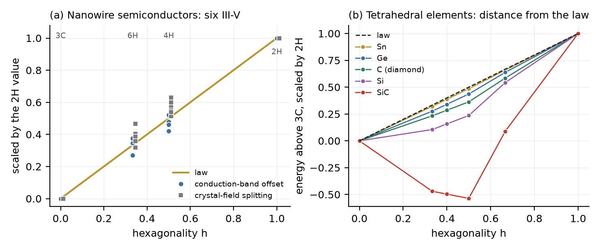

Ice, diamond and nanowires
In diamond each carbon atom bonds to four others at the corners of a tetrahedron. Silicon, germanium and grey tin do the same; in gallium arsenide, indium phosphide and their relatives the two kinds of atom alternate; in ice the oxygen atoms of water hold the same network through hydrogen bonds. In all of them the atoms form close-packed double layers, and the double layers stack cubic (zinc blende, diamond, ice Ic) or hexagonal (wurtzite, lonsdaleite, ice Ih), or any mixture. Grown as thin wires, GaAs and InP switch between the two, and the stacking can be set layer by layer during growth (Algra et al.; Caroff et al.); a few cubic layers in a hexagonal wire act as a quantum well (Spirkoska et al.). DICTO chose these three families as the last test of the law in real materials.
Each double layer has its lower atoms on one of the positions A, B, C and its upper atoms straight above them, joined by a bond along the stacking axis. The upper atom bonds to three atoms of the next double layer, and the lower atom to three of the previous one. A layer is hexagonal when the layers on either side of it sit on the same position.
Proof. Only the bond along the axis can be eclipsed; the three slanted bonds of every atom are staggered in all stackings. The axial bond of double layer k joins a lower atom whose other bonds point down to position Lk−1 and an upper atom whose other bonds point up to position Lk+1. The two sets of three bonds face each other (eclipsed) exactly when Lk−1 = Lk+1, that is when layer k is hexagonal, and then each of the three pairs of end atoms is a short third-neighbour pair. There is one axial bond per two atoms, so the eclipsed bonds are h/2 per atom and the short pairs 3h/2. ∎ Both counts were checked from explicit coordinates on 3C, 2H, 4H, 6H, 9R and 15R (tetra_counts.py).
The eclipsed bond is the only geometric difference between cubic and hexagonal stacking up to third neighbours, so any property that is a sum of local bond terms is a straight line in h. That is the Hexagonality Law for these materials. How far real properties stay on it is a question of data.
Belabbes, Panse, Furthmüller and Bechstedt computed the band structures of GaP, GaAs, GaSb, InP, InAs and InSb in the stackings 3C, 6H, 4H and 2H (h = 0, 1/3, 1/2, 1) with one method throughout. We compare each quantity at 6H and 4H with the straight line from 3C to 2H, and give the distance as a share of the full change from 3C to 2H:
| quantity | mean distance from the law line | worst case |
|---|---|---|
| conduction-band offset ΔEc | 4% | InP 4H, −8% |
| crystal-field splitting Δcf | 7% | InP and GaP, +13% |
| valence-band offset ΔEv | 10% | InP 4H, −27%; GaSb 6H, +27% |
| band gap Eg (GaP left out: indirect in 3C) | 11% | GaAs 6H, +23% |
The conduction-band offset decides how electrons collect in a cubic segment of a hexagonal wire. On the law line, a wire with hexagonality h has its conduction band raised by h times the full wurtzite–zinc-blende offset (for GaAs 149 meV, for InP 183 meV), whatever the order of the layers, to within a few per cent. The crystal-field splitting, which comes from the hexagonal symmetry itself, follows the line almost as well.

In the layer model used in #68, the energy of a stacking depends on couplings J1, J2, J3 between double layers one, two and three apart; the law holds exactly when J2 = J3 = 0. Ziembicki et al. fitted the couplings for the group-IV elements and their compounds with one method. The ratio (|J2| + |J3|)/J1 measures the distance from the law:
| material | J1, J2, J3 (meV per double-layer pair) | distance from the law |
|---|---|---|
| tin (grey) | 15.18, −0.22, −0.05 | 0.02 |
| germanium | 16.82, −1.05, −0.34 | 0.08 |
| diamond | 25.45, −3.44, −0.34 | 0.15 |
| silicon | 10.59, −2.59, −0.77 | 0.32 |
| silicon carbide | 2.74, −2.42, −0.40 | 1.03 |
Keller et al. computed the energies directly for silicon and germanium. Germanium's 6H and 4H lie within 6% of the law line (4.5 and 7.1 meV per atom against 5.3 and 8.0); silicon's lie 21–24% below it (1.2 and 2.5 against 3.2 and 4.9). Diamond sits at the same distance as cobalt and iron in #71. Silicon carbide, the best-known polytypic material, is the one furthest from the law, where J2 nearly cancels J1 and 4H and 6H fall below 3C. Near the law one stacking wins clearly; far from it, many compete.
Ice formed in clouds and from deeply supercooled water (Murray, Knopf and Bertram) is neither cubic nor hexagonal but stacking-disordered (ice Isd, Malkin et al.; Hansen, Koza and Kuhs), and stacking disorder takes part in how ice nucleates (Lupi et al.); its make-up is given by the cubicity, the share of cubic layers, which is 1 − h. Tonauer, Yamashita, del Rosso, Celli and Loerting measured the enthalpy of pure cubic ice turning hexagonal, using the fault-free cubic ice made only recently (del Rosso et al.; Komatsu et al.): −37.7 ± 2.3 J/mol, at 226 K. Earlier values for stacking-disordered samples scatter from less than −10 to about −160 J/mol, partly because the samples differed in cubicity. Tonauer et al. note that ice with many hexagonal layers must release less heat and have a smaller excess vapour pressure.
The prediction is testable with samples whose cubicity is measured by diffraction; we found no published set that pairs cubicity with enthalpy. Its weight is in the clouds: the vapour pressure decides whether cubic-rich ice crystals grow at the expense of hexagonal ones, and measured vapour pressures of cubic-rich ice (Murray and Bertram) differ more than the calorimetry allows, as Tonauer et al. point out.
(1) Silicon carbide, and to a lesser degree silicon, are far from the law in energy (Section 4). (2) The volumes of silicon and germanium polytypes change by only 0.1–0.2% across the stackings and do not follow the line. (3) Valence-band offsets of InP and GaSb depart by up to 27% of the full change. (4) The ice prediction is untested. (5) Nanowire surfaces, strain and the electric fields of hexagonal segments are outside the bulk numbers used here.
The tetrahedral networks carry the exact count of the law: eclipsed bonds h/2 per atom in every stacking. Their electronic properties come close to the line, the conduction-band offset of nanowire semiconductors closest. Their energies sort the elements from tin, on the law, to silicon carbide, far from it, and the distance tells how many stackings compete. For ice the law turns a qualitative remark into a number to measure. With this paper the series on real materials (#68, #70–#73) is complete.
The hexagonality h as a stacking measure goes back to Jagodzinski; the layer model of polytype energies (ANNNI) to Cheng, Needs and Heine; the band data are Belabbes et al.'s, who also plot their structural results against the hexagonality; the polytype energies are Keller et al.'s and Ziembicki et al.'s; the ice measurements are Tonauer et al.'s and the description of stacking-disordered ice Malkin et al.'s. The eclipsed-bond count for any stacking with its proof, the straight-line tests with numbers, the ranking by distance from the law, and the ice prediction are stated here. DICTO chose the three families and set the end of the series; the computations are joint work.
Sources checked (28 October 2026). Read: A. Belabbes, C. Panse, J. Furthmüller and F. Bechstedt, Electronic bands of III-V semiconductor polytypes and their alignment, arXiv 1206.2209 (Phys. Rev. B 86, 075208 (2012); Table II); M. Keller, A. Belabbes, J. Furthmüller, F. Bechstedt and S. Botti, First-principles insight in structure-property relationships of hexagonal Si and Ge polytypes, arXiv 2302.10822 (Tables I–II); J. Ziembicki, P. Scharoch, M. P. Polak, M. Wiśniewski and R. Kudrawiec, Electronic and structural properties of group IV materials and their polytypes, arXiv 2404.05718 (Table III); C. M. Tonauer, K. Yamashita, L. del Rosso, M. Celli and T. Loerting, Enthalpy change from pure cubic ice Ic to hexagonal ice Ih, J. Phys. Chem. Lett. 14, 5055 (2023); L. C. O. Dacal and A. Cantarero, An ab initio study of the polytypism in InP (PMC5036193; no polytype energy table). Search summaries, not read in full: T. L. Malkin et al., Phys. Chem. Chem. Phys. 2015; T. Hondoh, Philos. Mag. 2015; arXiv 2607.03465; C. Panse, D. Kriegner and F. Bechstedt, Phys. Rev. B 84, 075217 (2011) (record only); S. Limpijumnong and W. R. L. Lambrecht, cond-mat/9709191. Cited as given in the reference lists of Belabbes et al., Keller et al. and Tonauer et al., not read: C. Cheng, R. J. Needs and V. Heine, J. Phys. C 21, 1049 (1988); R. E. Algra et al., Nature 456, 369 (2008); P. Caroff et al., Nat. Nanotechnol. 4, 50 (2009); D. Spirkoska et al., Phys. Rev. B 80, 245325 (2009); B. J. Murray, D. A. Knopf and A. K. Bertram, Nature 434, 202 (2005); B. J. Murray and A. K. Bertram, Geophys. Res. Lett. 33, L17801 (2006); T. C. Hansen, M. M. Koza and W. F. Kuhs, J. Phys.: Condens. Matter 20, 285104 (2008); L. del Rosso et al., Nat. Mater. 19, 663 (2020); K. Komatsu et al., Nat. Commun. 11, 464 (2020); L. Lupi et al., Nature 551, 218 (2017); T. L. Malkin et al., PNAS 109, 1041 (2012). Cited as in earlier papers of the series: H. Jagodzinski (1949). Web searches: III-V polytypism ab initio energies and gaps; stacking-disordered ice cubicity and enthalpy; diamond, Si and Ge polytype energies and ANNNI parameters.
Data and code. Study 2026-10-28-ice-diamond-nanowires (tetra_counts.py, iii_v_bands.py, group_iv.py, fig73.py, with outputs), attached to this record. References: DICTO, The Focus (#66), DICTO DOI 10.5281/zenodo.23717687; Real Polytypes and the Hexagonality Law (#68), 10.5281/zenodo.23719275; The Hexagonality Law in Real Materials II (#70), 10.5281/zenodo.23723565; III (#71), 10.5281/zenodo.23726064; IV (#72), 10.5281/zenodo.23728287.